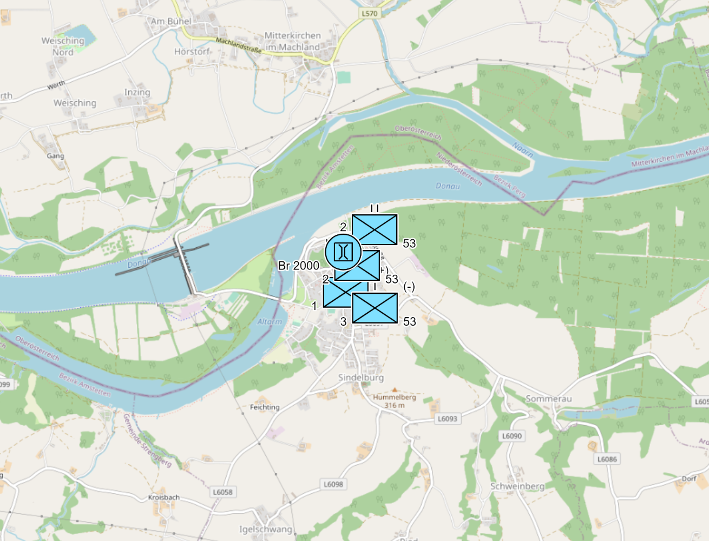
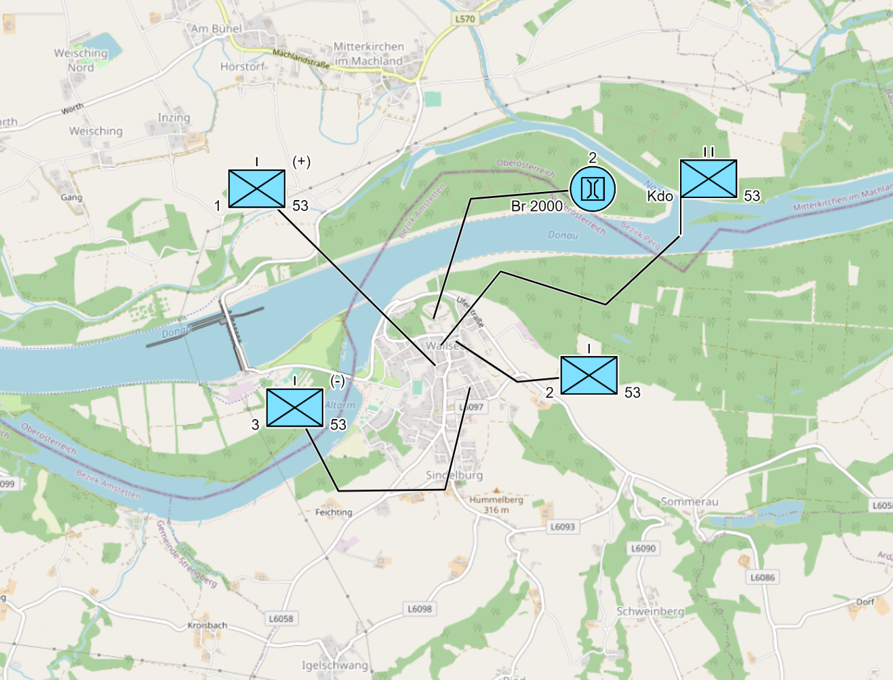
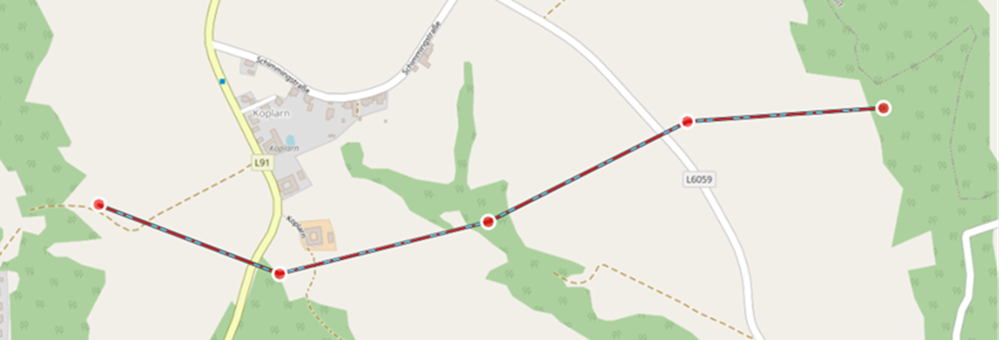
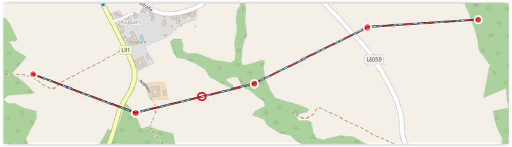
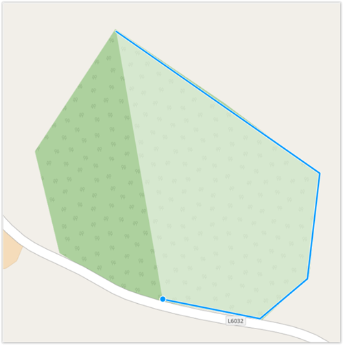
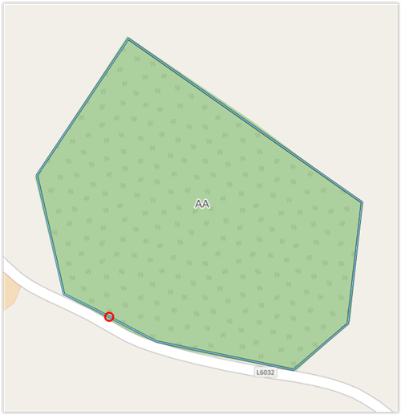
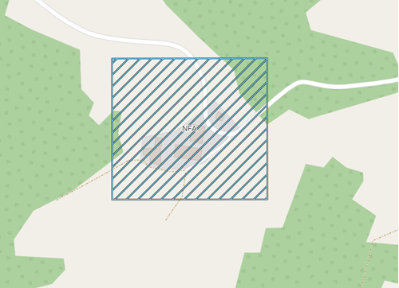
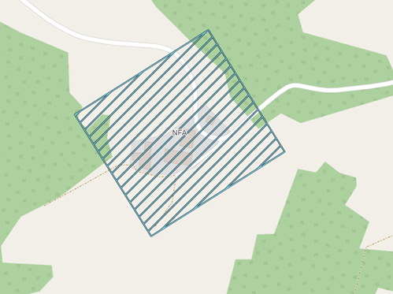
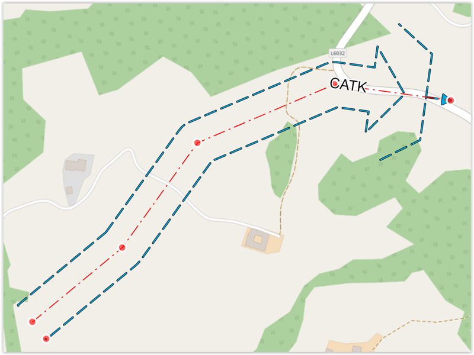
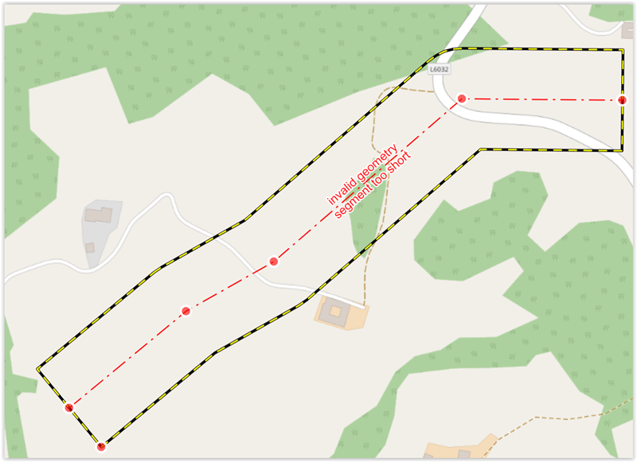

Bearbeitung von Objekten auf der Karte
In diesem Kapitel wird die Erstellung und Bearbeitung von Objekten mit verschiedenen Geometrien beschrieben.
Die Darstellung der Objekte auf der Karte erfolgt grundsätzlich gem. MIL-STD 2525C. Einen „Vorgriff“ auf den MIL-STD 2525D gibt es bei der Darstellung von zivilen Fahrzeugen & Geräte (Equipments) mit der Farbe „rosa“, sowie bei den Aktivitäten (Activities) mit den vier schwarzen Quadraten in jeder Ecke des Grundsymbols.
Mit der Version 0.17.0 wurde begonnen auch die Mission Task Verbs aus dem NATO Standard ATP-112, sowie nationale taktische Zeichen (Effect Verbs, Action Verbs - gekennzeichnet mit "(AUT only")) zu implementieren.
Auch wurden in ODIN Objekte dann anderes umgesetzt zu den Vorgaben gem. MIL-STD 2525C, wenn diese aus taktischer Sicht notwendig bzw. sinnvoller erschienen (z.B. Direction of Attack als Mehrpunktlinie anstelle einer „2-Punkt-Linie“; zusätzliche Zuordnung von Modifieren (z.B. bei Naturereignissen, Einrichtungen etc.); Auswahl aller Hositlity Statuse bei taktischen Grafiken - Punktobjekte etc.).
Allgemeines
Die Objekte werden hier nach Ihrer Zuordnung bzw. ihrer Geometrien unterschieden, weil die Erstellung und Bearbeitung, sowie die Inhalte des Eigenschaftsfenster sich nach diesen in ODIN ausrichtet:
- Einheiten (Units) Punktobjekte
- Waffen, Fahrzeuge, Gerät (Equipments) Punktobjekte
- Einrichtungen (Installations) Punktobjekte
- Aktivitäten (Activities) Punktobjekte
- SKKM-Symbole (AUT National Civil Symbols) Punktobjekte
- Taktische Grafiken (tactical Graphics) Punkt, Linien-, Flächen- und Korridorobjekte
Im ersten Teil wird die Erstellung der Objekte auf der Karte aufgrund der Geometrien (Punkt, Linie, Fläche, Korridor) beschrieben.
Im zweiten Teil erfolgt die Beschreibung der Eingabemöglichkeiten (Modifier gem. MIL-STD 2525C, zusätzliche Felder etc.) in den jeweiligen Eigenschaftsfenstern der Objekte.
Grundsätzlicher Ablauf bei der Erstellung
Der grundsätzliche Ablauf in ODIN um ein Objekt zu erstellen ist folgender:
-
aktiven Layer festlegen bzw. den gewünschten „Ziellayer“ als aktiven Layer festlegen (mit Doppelklick auf den Layernamen);
-
Map-Palette öffnen;
- in der Suche den gewünschten Text eingeben (bezieht sich immer auf Symbolnamen und Hierachiepfad);
- gewünschtes Symbol im Bereich der Map-Palette mit der Maus anklicken;
- mit der Maus auf die gewünschte(n) Position(en) auf der Karte klicken;
- Eigenschaftsfenster (öffnet sich automatisch) befüllen.
Erstellung aufgrund Geometrie des Objektes
Punktobjekte
Nach der Auswahl in der Map-Palette und dem Klick auf die gewünschte Position auf der Karte ist der Vorgang der Erstellung bereits abgeschlossen und das Eigenschaftsfenster wird geöffnet.
Um die Position eines Punktobjektes zu ändern, klickt Ihr diese mit der Maus an und verschiebt es auf die neue gewünschte Position.
Bei Kopieren (STRG + C) und Einfügen (STRG + V) erstellt ODIN auf der gleichen Stelle das Objekt nochmals. Wenn Ihr das Objekt anklickt und verschiebt, ist das Objekt nun zweimal auf der Karte ersichtlich. Beim Kopieren werden auch alle dem Objekt bereits im Eigenschaftsfenster zugeordneten Einträge mit kopiert.
Zu beachten ist, dass das kopierte Objekt immer im aktiven Layer abgespeichert wird (auch wenn das „Quell“-Objekt in einem anderen Layer abgespeichert ist).
Um die Darstellung der Lage zu verbessern, könnt Ihr bei den Punktsymbolen dazu die "Offset Location"-Funktion nützen. Dazu klickt Ihr auf das Objekt, hält die ALT-Taste gedrückt und verschiebt dann mit der Maus das Objekt auf die gewünschte Position:
|  |  |
|---|---|
Die Linie der "Offset Location" könnt Ihr anpassen, indem Ihr das Objekt markiert und danach mit der Maus auf die Linie fährt bis ein roter Kreis erscheint. Nun könnt Ihr mit der Maus die Linie verschieben und einen neuen Punkt setzen.
Die zweite Möglichkeit ist, das Objekt markieren, die ALT-Taste gedrückt halten und mit der Maus auf die Position in der Karte klicken, wo das Objekt dargestellt werden soll.
Um die "Offset Location" wieder aufzuheben, hält Ihr die ALT-Taste gedrückt und klickt dann auf den "Startpunkt" der "Offset Location".
Linienobjekte
Nach der Auswahl in der Map-Palette und dem Klick auf die gewünschte Position auf der Karte beginnt Ihr mit der Eingabe der Linie und fügt mit jedem Mausklick eine neue „Teilstrecke“ hinzu. Mit einem Doppelklick auf die Karte beendet Ihr die Eingabe des Linienobjektes und das Eigenschaftsfenster wird geöffnet.
Um die Position(en) einer Linie zu ändern, markiert Ihr die Linie und mit wählt einen roten Punkt aus und verschiebt diesen mit der Maus:

Wollt Ihr einen neuen Punkt setzen, fährt mit dem Mauszeiger auf die Linie, bis ein roter Kreis erscheint und verschiebt diesen mit der Maus:

Zum Verschieben der gesamten Linie müsst Ihr dabei die SHIFT-Taste gedrückt halten.
Um einen einzelnen Punkt zu löschen müsst Ihr die ALT-Taste gedrückt halten und dann den zu löschenden roten Punkt anklicken.
Kopieren (STRG + C) und Einfügen (STRG + V) verhält sich analog zu den Punktobjekten.
Flächenobjekte
Nach der Auswahl in der Map-Palette und dem Klick auf die gewünschte Position auf der Karte beginnt Ihr mit der Eingabe der Fläche und fügt mit jedem Mausklick eine neue „Teilstrecke“ hinzu. Beim Zeichnen der Fläche wird dieser Bereich mittels einer transparenten weißen Darstellung hervorgehoben. Mit einem Doppelklick auf die Karte beendet Ihr die Eingabe des Flächenobjektes und das Eigenschaftsfenster wird geöffnet:

Um die Position(en) einer Fläche zu ändern, markiert Ihr die Fläche und wählt einen der „Eck“-Punkte aus und verschiebt diesen mit der Maus.
Wollt Ihr einen neuen Punkt setzen, fährt mit dem Mauszeiger auf die Linie, bis ein roter Kreis erscheint und verschiebt diesen mit der Maus:

Zum Verschieben der gesamten Fläche müsst Ihr dabei die SHIFT-Taste gedrückt halten.
Um einen einzelnen Punkt zu löschen müsst Ihr die ALT-Taste gedrückt halten und dann den zu löschenden „Eck“-Punkt anklicken.
Kopieren (STRG + C) und Einfügen (STRG + V) verhält sich analog zu den Punktobjekten.
Flächenobjekte, rechteckig
Eine Sonderform bei der Bearbeitung stellt das rechteckige Flächenobjekt dar (z.B. für die Darstellung der Feuerstellungsräume wie ACA, NFA, ZOR etc.).
Nach der Auswahl in der Map-Palette und dem Klick auf die gewünschte Position auf der Karte erscheint das rechteckige Flächenobjekt. Der ausgewählte Punkt mit der Maus auf der Karte ist immer der linke obere Eckpunkt des Rechteckes.
Um die Größe des Rechteckes zu ändern, markiert Ihr das Rechteck, fährt mit dem Mauszeiger auf einen der Eckpunkte bis ein roter Kreis erscheint und verschiebt diesen mit der Maus.
Wenn Ihr die Maus auf einen der Eckpunkte bewegt bis der rote Kreis erscheint, die STRG-Taste gedrückt haltet und die Maus danach bewegt, könnt Ihr das Rechteck rotieren.
|  |  |
|---|---|
Korridorobjekte
Nach der Auswahl in der Map-Palette und dem Klick auf die gewünschte Position auf der Karte beginnt Ihr mit der Eingabe des Korridors und fügt mit jedem Mausklick eine neue „Teilstrecke“ hinzu. Mit einem Doppelklick auf die Karte beendet Ihr die Eingabe des Korridorobjektes und das Eigenschaftsfenster wird geöffnet.
Um die Position(en) eines Korridores zu ändern, markiert Ihr den Korridor, wählt einen roten Punkt aus und verschiebt diesen mit der Maus:

Wollt Ihr einen neuen Punkt setzen, fährt mit dem Mauszeiger auf die rote innere Linie, bis ein roter Kreis erscheint und verschiebt diesen mit der Maus.
Die Breite des Korridors könnt Ihr ändern, indem Ihr am Ende des Korridors den seitlichen roten Punkt mit der Maus verschiebt.
Wenn beim Erstellen oder Ändern des Korridors eine Geometrie entsteht, die nicht mehr auf der Karte übersichtlich dargestellt werden kann, erscheint der Korridor mit einer gelb-schwarzen Linie und dem Hinweis, dass eine ungültige Geometrie gewählt wurde:

Dies könnt Ihr beheben, in dem Ihr die Breite des Korridors kleiner macht oder die roten Punkte entsprechend verändert.
Zum Verschieben des gesamten Korridors müsst Ihr dabei die SHIFT-Taste gedrückt halten.
Um einen einzelnen Punkt zu löschen müsst Ihr die ALT-Taste gedrückt halten und dann den zu löschenden roten Punkt anklicken.
Kopieren (STRG + C) und Einfügen (STRG + V) verhält sich analog zu den Punktobjekten.